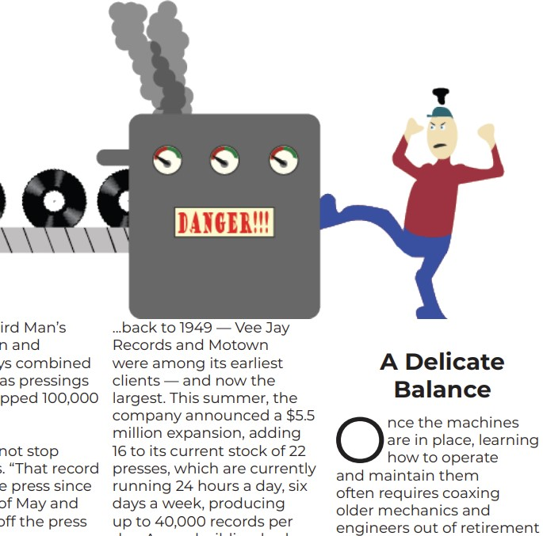
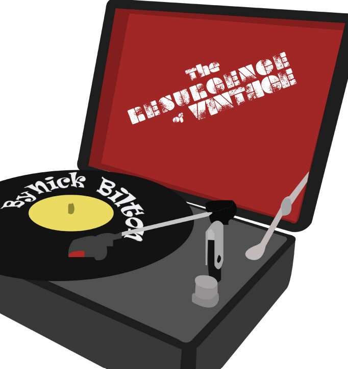
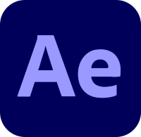

About Adobe Creative Suite And My Experience With It
Adobe Creative Suite
Adobe Creative Suite (CS) is a collection of software applications developed by Adobe Systems. However, it's important to note that Adobe discontinued the Creative Suite line and transitioned to a subscription-based model known as Adobe Creative Cloud.
Previously, the Adobe Creative Suite consisted of various applications for different creative purposes, such as graphic design, video editing, web development, and more.
Photoshop
A powerful image editing and manipulation program widely used for photo editing, graphic design, and digital art.
Skill Level: 
My Photoshop Project Examples:

Illustrator
A vector graphics editor used to create illustrations, logos, icons, typography, and other scalable graphics.
Skill Level:
My Illustrator Project Examples:


InDesign

A desktop publishing application used for designing and creating layouts for print and digital media, such as magazines, brochures, and eBooks.
Skill Level: 
My InDesign Project Examples:
Premiere Pro
A professional video editing software for non-linear video editing, used extensively in film, television, and web content production.
Skill Level: 
My Premiere Pro Project Examples:
After Effects
A motion graphics and visual effects software used to create cinematic visual effects, animations, and motion graphics for videos.
Skill Level:
My After Effects Project Examples:
Media Encoder
A versatile tool used by professionals in the film, video production, and broadcasting industries to encode, transcode, and deliver media files in various formats, making it compatible with different playback devices and platforms.
Skill Level:
Dreamweaver
A web development application that allows users to design, code, and manage websites using both visual and code-based interfaces.
Skill Level:
Bridge
A valuable tool for creative professionals who need to manage and organize large collections of media files. It streamlines the workflow by providing a centralized platform for file browsing, metadata management, and integration with other Adobe applications.
Skill Level:
Acrobat
A program for creating, editing, and managing PDF documents.
Skill Level: